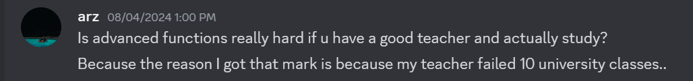

Need Advice: How to Succeed in Advanced Functions Despite Challenges
If you're taking Advanced Functions at night school, you're probably feeling the stress—it’s a tough course to manage, especially with a schedule that runs from 6:30 PM to 10 PM. Getting home at 11 PM can really mess up your sleep routine, and if you’re also juggling other courses like Calculus during regular school hours, it can feel overwhelming. I’ve been there, and I’m here to share some advice on how to handle it.
First off, let me say that not all teachers are going to make this easy for you. My teacher, for instance, wasn’t the best. She wasn’t a native English speaker and taught at a very slow pace, which made those late-night classes even more tiring. Each unit took about three days to finish, and the tests were scheduled at 8:30 PM, lasting until 10 PM. There were no quizzes, and the final exam only made up 10% of our grade, with the Final Summative Evaluation (FSE) making up 20%. The exam itself was tricky because you couldn’t go back to previous questions, and if you accidentally closed it, you were stuck with a zero. This led to a lot of frustration in my class, with six students ending up with zeros due to these strict rules.
But here’s the advice I have for you: don’t let a tough teacher or a difficult schedule bring you down. You can still succeed if you focus on what you can control. I made sure to stay respectful, even when things were frustrating. Instead of dwelling on what the teacher wasn’t doing, I took charge of my own learning. I spent a lot of time studying on my own, writing out my lessons in LaTeX during my late-night hours. This helped me review the material regularly, and it paid off. I ended up with a 93 in the class, thanks in large part to scoring 100 on the FSE.
Here’s what worked for me:
- Self-Study: Don’t rely solely on the teacher. Take the time to study on your own and really understand the material.
- Focus on Weak Areas: Identify where you’re making mistakes and practice those areas until you get them right.
- Stay Calm During Exams: The exams can be stressful, especially with strict rules, but stay calm and prepared. It makes all the difference.
In the end, Advanced Functions turned out to be easier for me
than I initially thought, especially when compared to MCR. By
focusing on self-study and practicing where it mattered, I was
able to overcome the challenges. I did less homework but made
sure the work I did was targeted and effective. If I can do it,
so can you.
If you want to see the notes I made for Advanced Functions, you
can view them on
Overleaf.
Project Summary
This project includes organized folders containing tests and
exam reviews for Advanced Functions. Please note that
Overleaf may occasionally fail to recompile the
main.tex file, displaying a message that a
premium subscription is required. Despite this, the
materials are well-structured and designed to help you
succeed in your studies.